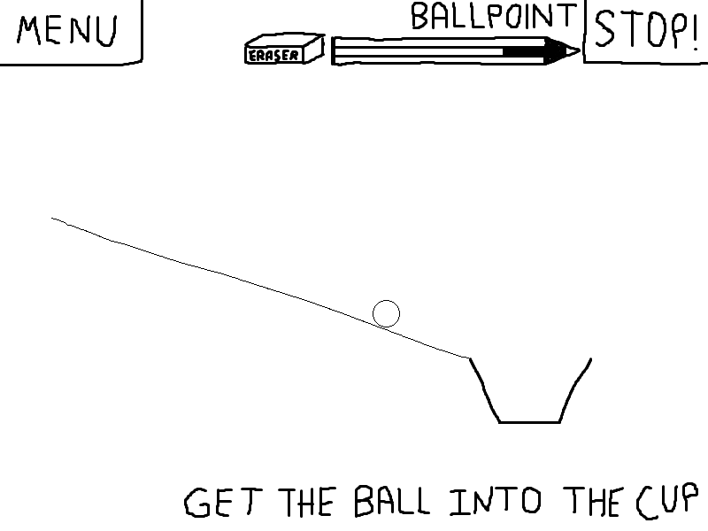
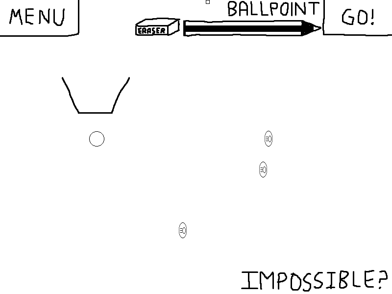

Screenshots:
 
{kind=link}
{kind=link}
Description:
Get the ball into the cup with the power of ballpoint pen drawing! However, keep watch of how much ink you use, or you may run out! Reclaim ink with the handy eraser. Use strategy to use the power-ups in levels to your advantage, or they might hinder you more than help! This is my first Experimental Gameplay Project release, and it took the full 7 days to create.
Features:
- Pixel-based physics: The ball will arbitrarily react to anything you draw with Newtonian physics.
- Two power-ups (speedup coin and bomb) that can either help or hinder the ball's progress.
- Six increasingly-challenging levels.
- Create your own levels! Levels are PNG files, so it's really easy to make your own levels. See the Readme for details.
- Cross platform: Works on PC and Mac.
Known Bugs:
- Sometimes the ball goes through lines, especially when the ball is moving really fast. This is due to the short lead-time on the physics system (two days).
- When the ball gets "pinched" in a V-shaped curve, it does funky things.
Download:
Available for PC and Mac.